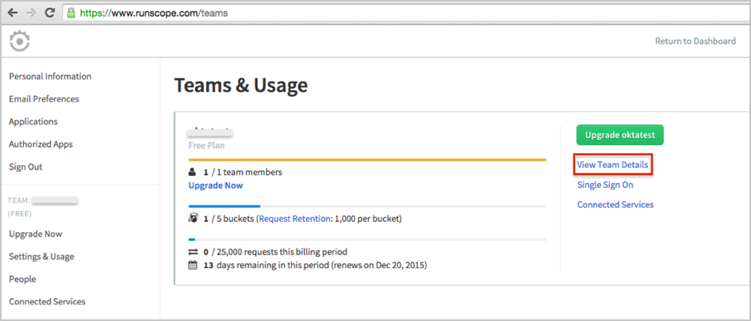
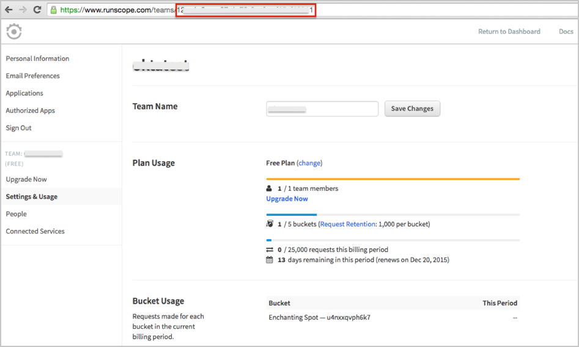
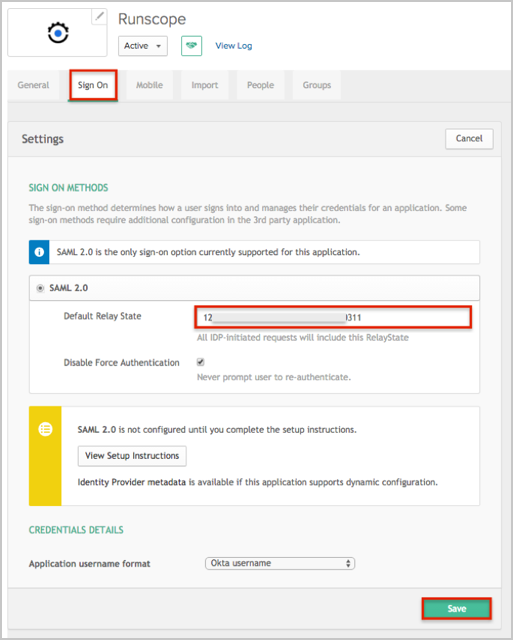
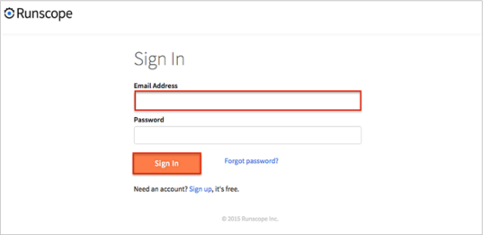

Log in to Runscope.
Go to this page: https://www.runscope.com/teams.
Click on the View Team Details link:

Save the last part of the URL from your browser, as shown below:

In Okta, select the Sign On tab for the Runscope app:
Click Edit.
Enter the value you copied in step 4 (above) into the Default Relay State field.
Click Save.

Contact the Runscope Support team at: help@runscope.com and request that they enable SAML 2.0 for your account.
Save and attach the following metadata:
Sign in to Okta Admin app to have this variable generated for you.
Include the team name for which you want to activate SAML 2.0.
Runscope Support will process your request. After receiving a confirmation email, you can start assigning people to the application.
Done!
Notes:
IdP-initiated flows, SP-initiated flows, and Just In Time (JIT) provisioning are all supported.
For an SP-initiated flows:
